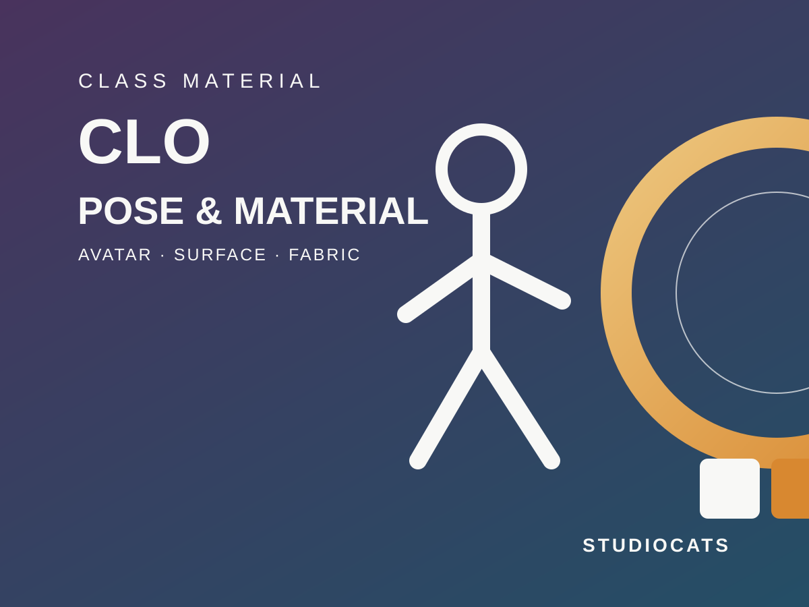

CLO AI 포즈 기초와 패턴 귀걸이 재질 실습
2026.08.30
기본 아바타에 간단한 AI 포즈를 적용하고, 시뮬레이션 없이 패턴으로 드롭 귀걸이를 제작한 뒤 Metal·Leather·Fur·Glass 재질을 비교하고 Avatar Accessory로 저장하는 실습입니다.
이번 실습에서는 CLO 기본 아바타에 간단한 정지 포즈를 적용하고, 작은 패턴으로 귀걸이를 제작합니다. 완성한 귀걸이에는 Metal, Leather, Fur, Glass 등 여러 재질을 적용해 빛에 반응하는 방식의 차이를 관찰합니다. 이번 주의 목표는 복잡한 포즈나 애니메이션을 만드는 것이 아닙니다. 다음 수업에서 포즈 애니메이션과 캣워크 모션을 다루기 전에, 촬영에 사용할 정지 포즈를 저장하고 3D 재질의 기본 입력을 구분하는 것이 목표입니다.
가장 중요한 실습 규칙
1. 귀걸이 패턴에는 시뮬레이션을 실행하지 않습니다. 2. 귀 근처에 배치한 직후 Freeze를 적용해 형태와 위치를 고정합니다. 3. Metal·Leather·Fur·Glass 테스트는 Avatar Accessory 등록 전에 완료합니다. 4. 액세서리 등록 직전에 반드시 편집 가능한 원본 프로젝트를 별도 저장합니다. 5. 등록된 액세서리는 원래의 2D 패턴으로 돌아가 형태를 수정할 수 없습니다. 작업 순서는 반드시 ‘패턴 제작 → 귀 근처 배치 → Freeze → 렌더링 두께 → 재질 테스트 → Mirror Paste → 원본 저장 → 액세서리 등록 → 다시 불러오기’ 순서로 진행합니다.
실습을 마치면 남아 있어야 하는 파일
• W02_이름_pose01.pos — 다시 불러올 수 있는 정지 포즈 • W02_이름_earring_SOURCE.zprj — 패턴을 계속 수정할 수 있는 원본 • W02_이름_earring_FINAL.zprj — 좌우 귀걸이와 최종 재질이 적용된 프로젝트 • W02_이름_drop_earring.zacs — 등록이 끝난 Avatar Accessory • W02_이름_metal.png / leather.png / fur.png / glass.png — 같은 귀걸이의 재질 비교 이미지 SOURCE 파일은 액세서리 등록 전 상태를 보존하는 가장 중요한 파일입니다. FINAL이나 ZACS만 남기고 SOURCE를 덮어쓰지 않습니다.
1. 기본 아바타에 AI 포즈 적용하기
1. CLO 기본 성인 아바타를 불러옵니다. 이번 실습에서는 외부 캐릭터를 사용하지 않습니다. 2. AI Studio에서 AI Pose Generator를 엽니다. 3. 전신이 보이고 두 손이 몸에서 조금 떨어진 참고 이미지 또는 간단한 프롬프트를 사용합니다. 4. 생성 결과 중 의상과 귀 부분이 잘 보이는 포즈 한 개를 적용합니다. 5. 정면과 3/4 방향에서 발이 바닥에 닿는지, 손이 몸을 관통하지 않는지, 손이나 머리카락이 귀를 가리지 않는지만 확인합니다. 6. 세 항목이 괜찮으면 더 깊게 보정하지 않고 W02_이름_pose01.pos로 저장합니다. 손가락 각도, 관절 제약, 포즈 사이의 전환과 애니메이션은 다음 수업에서 다룹니다.
2. 재질을 볼 때 기억할 네 가지
Base Color는 표면의 기본 색과 무늬를 결정합니다. Normal은 실제 외곽선을 늘리지 않고 표면에 작은 요철이 있는 것처럼 보이게 합니다. Roughness는 반사가 얼마나 또렷하거나 흐리게 보이는지 결정합니다. Metallic은 표면이 금속인지 비금속인지 구분합니다. 나중에 Unreal Engine으로 이동하면 이 정보는 같은 이름의 Material 입력에 연결됩니다. 이번 실습에서는 복잡한 노드를 만들지 않고, 같은 형태의 귀걸이가 재질에 따라 어떻게 다르게 보이는지 비교합니다.
3. 시뮬레이션 없이 드롭 귀걸이 만들기
1. 2D 창에서 Polygon 또는 Ellipse 도구를 선택합니다. 2. 높이 약 45–65mm 정도의 물방울, 타원, 다이아몬드 또는 길쭉한 태그 형태를 만듭니다. 3. 패턴은 반드시 닫힌 한 조각이어야 하며 봉제선은 만들지 않습니다. 4. Edit Pattern 도구로 점을 정리합니다. 점이 너무 많으면 렌더링 두께를 추가했을 때 옆면이 울퉁불퉁해질 수 있습니다. 5. 패턴 이름을 Earring_Drop_L로 변경합니다. 6. Fabric 탭에서 새 원단을 만들고 MAT_Earring_Test로 이름을 바꾼 뒤 귀걸이 패턴에 지정합니다.
3-1. 한쪽 귀 근처에 직접 배치하기
1. 시뮬레이션이 꺼져 있는지 확인합니다. 귀걸이 작업 중에는 Space 키를 누르지 않습니다. 2. 3D 창에서 Select/Move 도구로 귀걸이 패턴을 선택합니다. 3. Gizmo의 이동 축으로 한쪽 귓불 아래에 옮깁니다. 4. 측면에서 얼굴이나 귀 안쪽에 박히지 않도록 몸 바깥쪽으로 조금 띄웁니다. 5. 정면에서는 귀 아래에 자연스럽게 보이고, 측면에서는 피부와 겹치지 않는지 확인합니다. 6. 회전 Gizmo로 패턴의 앞면이 얼굴 바깥쪽 또는 촬영 카메라를 향하도록 맞춥니다. 귀걸이는 중력으로 떨어뜨리는 것이 아니라 직접 배치합니다. 공중에 떠 있는 것처럼 보여도 시뮬레이션을 실행하지 않습니다.
3-2. Freeze로 형태와 위치 고정하기
1. 2D 또는 3D 창에서 귀걸이 패턴을 선택합니다. 2. 마우스 오른쪽 버튼을 누르고 Freeze를 선택합니다. 3. Freeze 색상 표시가 나타나는지 확인합니다. 4. 현재 형태와 위치가 유지되는지 확인합니다. Freeze는 패턴을 단단한 오브젝트처럼 고정하지만 패턴 자체를 액세서리로 변환하지는 않습니다. Freeze 상태에서는 원본 패턴이 남아 있으므로 등록 전까지 2D 형태와 속성을 수정할 수 있습니다.
3-3. 렌더링 두께로 패턴을 두껍게 보이게 만들기
1. 귀걸이 패턴을 선택합니다. 2. Property Editor에서 Add'l Thickness - Rendering을 찾습니다. 3. 작은 값부터 올리며 정면과 측면의 두께를 확인합니다. 4. 두께가 보이지 않으면 3D Garment Rendering Style을 두꺼운 표면이 보이는 스타일로 변경합니다. 5. Extrusion Direction은 Both에서 시작합니다. 귀나 얼굴 쪽으로 두께가 파고들면 Forward 또는 Backward를 시험합니다. 6. 귀걸이 옆면이 보이도록 Seam Face가 생성되는지 확인합니다. Rendering Thickness는 화면과 렌더에 보이는 두께이며 시뮬레이션 충돌 두께가 아닙니다. 이번 실습에서는 Collision Thickness를 조절하지 않습니다.
4. 액세서리 등록 전에 여러 재질 비교하기
재질 테스트는 한쪽 귀걸이에서 먼저 진행합니다. 카메라, 조명, 귀걸이 위치와 크기를 고정하고 재질만 변경해야 차이가 정확히 보입니다. 각 재질을 시험할 때마다 Fabric을 복제해 MAT_Earring_Metal, MAT_Earring_Leather처럼 이름을 붙입니다. 하나의 Fabric 설정을 계속 덮어쓰면 이전 결과로 돌아가기 어렵습니다.
4-1. Metal
1. MAT_Earring_Test를 복제해 MAT_Earring_Metal로 이름을 바꿉니다. 2. Fabric Property Editor의 Material → Type을 Metal로 변경합니다. 3. Base Color를 은색, 어두운 회색, 골드 중 하나로 설정합니다. 4. Roughness를 낮은 방향에서 시작하고, 반사가 지나치게 거울 같으면 조금 올립니다. 5. 밝은 면과 어두운 면이 함께 있는 조명에서 금속 하이라이트를 확인합니다. 6. Render 화면에서 W02_이름_metal.png를 저장합니다.
4-2. Leather
1. Fabric을 복제해 MAT_Earring_Leather로 이름을 바꿉니다. 2. Material → Type을 Leather로 변경합니다. 3. 브라운, 블랙 또는 원하는 컬러 가죽을 선택합니다. 4. Metal보다 Roughness를 높여 반사를 넓고 부드럽게 만듭니다. 5. 필요하면 약한 Normal Map을 추가합니다. 너무 강하면 작은 귀걸이가 돌처럼 보일 수 있습니다. 6. Metal과 같은 카메라에서 W02_이름_leather.png를 저장합니다.
4-3. Fur — Render에서 확인
1. Fabric을 복제해 MAT_Earring_Fur로 이름을 바꿉니다. 2. Material → Type을 Fur로 변경합니다. 3. Fur는 Render Only 재질이므로 일반 3D 작업 화면만 보고 실패했다고 판단하지 않습니다. Render 모드에서 확인합니다. 4. 귀걸이가 작으므로 짧은 털 길이와 낮은 밀도에서 시작합니다. 털이 너무 길면 원래 형태가 사라집니다. 5. 털이 얼굴을 관통하면 패턴을 얼굴에서 조금 더 바깥쪽으로 이동합니다. 시뮬레이션으로 해결하지 않습니다. 6. W02_이름_fur.png를 저장합니다.
4-4. Glass와 Gem — 두께와 조명도 함께 확인
1. Fabric을 복제해 MAT_Earring_Glass로 이름을 바꿉니다. 2. Material → Type을 Glass로 변경합니다. 보석 느낌을 비교하려면 Gem도 별도 Fabric으로 시험합니다. 3. Glass와 Gem은 투명도만 낮춘다고 완성되지 않습니다. 렌더링 두께와 주변 조명에 따라 투명도와 흡수 표현이 달라집니다. 4. Absorption을 조절하며 가장자리 두께가 읽히고 뒤쪽 피부와 배경이 적당히 비치는지 확인합니다. 5. Gem은 Render Only이므로 Render 화면에서 확인합니다. 6. W02_이름_glass.png를 저장합니다.
재질별로 어디에서 확인할까?
• Metal — 3D 화면에서 기본 확인 가능, 최종 판단은 Render • Leather — 3D 화면에서 색·거칠기·Normal 확인 가능, 최종 판단은 Render • Fur — Render Only이므로 Render에서 확인 • Glass — 두께와 조명의 영향을 크게 받으므로 Render에서 확인 • Gem·Glitter — Render Only이므로 Render에서 확인 재질이 보이지 않을 때는 값을 무조건 크게 올리기 전에 현재 화면이 3D 작업 창인지 Render인지 먼저 확인합니다.
5. Mirror Paste로 반대쪽 귀걸이 만들기
1. 사용할 최종 재질을 한쪽 귀걸이에 적용합니다. 2. 2D 창에서 Earring_Drop_L을 선택하고 Ctrl+C로 복사합니다. 3. 우클릭 → Mirror Paste 또는 Ctrl+R을 실행한 뒤 2D 창의 빈 공간을 클릭합니다. 4. 새 패턴 이름을 Earring_Drop_R로 바꿉니다. 5. 3D 창에서 새 패턴을 반대쪽 귀 아래로 직접 옮깁니다. 시뮬레이션은 실행하지 않습니다. 6. 정면에서 좌우 높이와 얼굴 중심에서 떨어진 거리를 비교합니다. 7. 측면에서 피부와 머리카락 관통 여부를 확인합니다. 8. 오른쪽 패턴에도 우클릭 → Freeze를 적용합니다.
6. 등록 전에 편집 가능한 원본 저장하기
액세서리 등록을 누르기 전에 File → Save As로 W02_이름_earring_SOURCE.zprj를 저장합니다. 이 파일에는 2D 패턴, 좌우 위치, Freeze 상태, Rendering Thickness와 여러 Fabric 재질이 모두 남아 있어야 합니다. 그다음 다시 Save As를 실행해 W02_이름_earring_FINAL.zprj를 만듭니다. 등록 작업은 FINAL 파일에서 진행합니다. SOURCE 파일을 열어 둔 채 그대로 덮어쓰지 않습니다. SOURCE는 형태와 재질을 다시 수정할 수 있는 제작 파일이고, ZACS는 불러와 사용하는 배포용 액세서리 파일입니다.
7. Avatar Accessory로 등록하기
1. 좌우 귀걸이의 위치, Freeze, 두께와 최종 재질을 마지막으로 확인합니다. 2. Main Menu → Avatar → Register Accessory를 엽니다. 3. Rigging Type은 Standard, Accessory Type은 Earring으로 설정합니다. 4. Object는 Pattern을 선택하고 수업 화면에 따라 좌우 귀걸이 패턴을 지정합니다. 5. 이번 실습에서는 이미 Mirror Paste로 좌우를 만들었으므로 같은 귀걸이가 추가 생성되지 않도록 Mirror Creation 옵션을 확인합니다. 6. 자동 또는 사용자 지정 썸네일을 확인합니다. 7. W02_이름_drop_earring.zacs로 저장합니다. Save를 누르면 패턴은 Avatar Accessory로 변환됩니다. 이 단계는 제작 중간이 아니라 최종 등록 단계입니다.
8. 새 장면에서 다시 불러와 확인하기
1. 현재 프로젝트를 저장한 뒤 새 장면을 엽니다. 2. 등록할 때 사용한 것과 같은 CLO 기본 아바타를 불러옵니다. 3. W02_이름_drop_earring.zacs를 불러옵니다. 4. 좌우 귀걸이가 모두 나타나는지 확인합니다. 5. 정면과 측면에서 높이, 크기와 얼굴 관통 여부를 확인합니다. 6. Render 화면에서 최종 재질과 Rendering Thickness가 유지되는지 확인합니다. 7. 문제가 있으면 등록된 액세서리를 억지로 수정하지 말고 SOURCE.zprj로 돌아가 수정한 뒤 새 ZACS로 다시 등록합니다.
등록 후 무엇을 바꿀 수 있고, 무엇을 원본에서 고쳐야 할까?
등록한 귀걸이를 다시 불러온 뒤에는 Scene 또는 3D 창에서 귀걸이를 선택해 색상을 조절할 수 있습니다. 하지만 2D 패턴 모양, 패턴 점, 렌더링 두께와 모든 Material Type을 등록 전 Fabric처럼 계속 편집할 수 있다고 생각하면 안 됩니다. 특히 Metal·Leather·Fur·Glass 같은 전체 재질 타입 실험은 등록 전에 끝내는 것이 안전합니다. CLO 공식 매뉴얼은 불러온 Avatar Accessory의 색상 변경은 안내하지만, 등록 전 패턴에 지정한 Fabric Material Type 전체를 등록 후에도 동일하게 전환할 수 있다고 보장하지 않습니다. 따라서 이 수업에서는 ‘색상 정도의 단순 조정은 등록 후 가능할 수 있지만, 형태·두께·재질 타입 변경은 SOURCE 프로젝트에서 수정한 뒤 다시 등록한다’를 기준으로 사용합니다.
문제가 생겼을 때 확인 순서
귀걸이가 축 늘어졌다면 시뮬레이션을 실행했는지 확인하고 SOURCE 파일로 돌아가 다시 배치한 뒤 Freeze합니다. 두께가 보이지 않으면 Add'l Thickness - Collision이 아니라 Add'l Thickness - Rendering을 조절했는지, 3D Rendering Style이 두꺼운 표면을 표시하는지 확인합니다. Fur 또는 Gem이 보이지 않으면 일반 3D 창이 아니라 Render 화면에서 확인합니다. Glass가 플라스틱처럼 보이면 투명도만 낮추지 말고 Rendering Thickness, Absorption, 조명과 배경을 함께 확인합니다. 좌우가 겹치거나 한쪽만 보이면 Mirror Paste 뒤 새 패턴의 3D 위치를 반대쪽 귀로 직접 옮겼는지 확인합니다. 등록 후 모양을 바꿔야 한다면 ZACS를 수정하려 하지 말고 SOURCE.zprj를 열어 수정하고 다시 등록합니다.
제출 전 체크리스트
□ AI 포즈를 .pos 파일로 저장하고 다시 불러와 확인했습니다. □ 귀걸이 제작 중 시뮬레이션을 실행하지 않았습니다. □ 좌우 귀걸이가 모두 Freeze 상태입니다. □ Rendering Thickness로 옆면 두께가 보입니다. □ Metal·Leather·Fur·Glass를 등록 전에 비교했습니다. □ Fur와 Gem은 Render 화면에서 확인했습니다. □ 편집 가능한 SOURCE.zprj를 별도로 저장했습니다. □ Mirror Paste로 만든 좌우 위치를 정면과 측면에서 확인했습니다. □ ZACS를 새 장면에 다시 불러와 확인했습니다. □ 수정할 때 돌아갈 SOURCE 파일이 남아 있습니다.